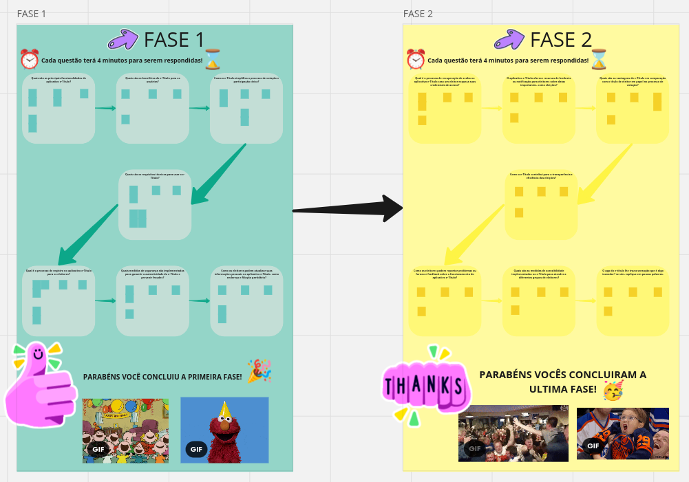

Brainstorming
Introdução
É importante utilizar uma técnica de elicitação para obter os requisitos de um sistema e descobrir quais deveriam mudar, ser alterado ou acrescentar. Será apresentado neste artefato a técnica do brainstorming, e como vamos utilizá-lo no projeto.
Motivação e Objetivo
A motivação em utilizar a técnica brainstorming se baseia pelos benefícios que ele traz, como a estimulação de desenvolver novas idéias e conhecimento de forma que não tenha julgamento nem críticas e todos os participantes da reunião do brainstorming tem a permissão de expor suas ideias igualmente, outro fato interessante que motivou é a facilidade em compreender essa técnica por não ser preciso um conhecimento prévio para executá-la, deixando os participantes ativos no período da reunião, sem a necessidade de serem muito qualificados, além dos custos serem muito baixos, sem precisar de muitos recursos.
Com o objetivo de gerar novas ideias, compreender os requisitos presentes no app do e-título e descobrir os problemas presentes nele. Além de ajudar no desenvolvimento do questionário.
Metodologia
O brainstorming, também conhecido como tempestade de ideias, é uma técnica que visa estimular a criatividade e a inovação ao permitir que um grupo de pessoas compartilhe livremente ideias, perspectivas e soluções sem críticas. Desenvolvida por Alex Faickney Osborn, essa abordagem gera uma grande quantidade de ideias em um curto período de tempo. Após a geração de ideias, elas são analisadas e avaliadas para identificar as mais promissoras, que podem ser refinadas em soluções práticas e inovadoras para problemas ou desafios. O brainstorming é amplamente utilizado em negócios, educação e resolução de problemas, promovendo a participação ativa e a criatividade das equipes.
No projeto, esta técnica será por meio de uma reunião realizada no dia 30/09/2023 às 8h por meio do miro para realizar a atividade proposta e a gravação será pelo teams, a reunião está prevista para durar 56 minutos.
O miro do brainstorming está disponívem em: miroProj, e pode ser visualizado na imagem 1.
Sobre as funções para a reunião, o participante irá resolver as atividades propostas, o moderador vai explicar como que funciona as atividades e ficará de olho no horário determinado por cada questão, além de não deixar os participantes sair do foco, o auxiliar irá apoiar o moderador, mantendo a organização nas atividades e anotando as respostas do miro para este artefato do brainstorming.
Imagem 1 - Apresentação do miro

Fonte: SENA. Esther; BARBOSA. Maria. 2023.
Palavras-chave usadas na sessão de Brainstorming
Tabela 1: Palavras-chave.
| Palavra-chave |
|---|
| Eleitores |
| Registro |
| Funcionalidades |
| Segurança |
| Acessibilidade |
| Comparação (com título em papel) |
| Usabilidade |
| Inovação |
Fonte: SENA. Esther; BARBOSA. Maria. 2023.
Participantes
Tabela 2: Participantes.
| Nome | Função |
|---|---|
| Maria Barbosa | moderadora |
| Esther Sena | Auxiliar |
| João Victor | participante |
| Maria Marques | participante |
| Mariiana Siqueira | participante |
| Mateus Orlando | participante |
Fonte: SENA. Esther; BARBOSA. Maria. 2023.
Perguntas / Respostas
Quais são as principais funcionalidades do aplicativo e-Título?
Respostas pergunta 1
| Respostas | Participantes |
|---|---|
| 1. Apresentar-se apto a exercer o voto, solicitar pedido de justificativa de ausência | João |
| 2. Acessar o título de eleitor, acessar ao Título de eleitor, mostrar a zona eleitoral | Maria Eduarda dos Santos |
| 3. Acesso a localização do local de votação, emitir certidões, como quitação eleitoral. | Mariiana |
| 4. Emitir o título e acessá-lo, verificar o local de votação, notificar o eleitor acerca das informações da eleição | Matheus |
Tabela 3: Respostas pergunta 1
Fonte: SENA. Esther; BARBOSA. Maria. 2023.
Quais são os benefícios do e-Título para os usuários?
Respostas pergunta 2
| Respostas | Participantes |
|---|---|
| 1. Apresentar documentos de forma eletrônica e visualizar locais de votação mais próximo do usuário. | João |
| 2. Praticidade. É de fácil acesso | Maria |
| 3. Poder acessar o título de eleitor a qualquer momento. | Mariiana |
| 4.Facilita o acesso ao título, notifica alertando sobre novidades e conseguir ver o mapa com a distância dele ao local de votação. | Matheus |
Tabela 4: Respostas pergunta 2
Fonte: SENA. Esther; BARBOSA. Maria. 2023.
Como o e-Título simplifica o processo de votação e participação cívica?
Respostas pergunta 3
| Respostas | Participantes |
|---|---|
| 1. De forma eficaz e ágil o app tira do usuário a necessidade de carregar consigo vários documentos impressos no dia da votação. Faz com que o usuário não tenha a necessidade de pesquisar os locais onde votar, pois o app ja os fornece | João |
| 2. É uma forma fácil de te todas as informações do título de eleitor na palma da mão. | Maria |
| 3. Evita ter que levar o título de eleitor no dia da votação. Facilita o acesso a localização do local de votação. | Mariiana |
| 4. Ele tenta evitar o deslocamento do eleitor até um cartório eleitoral para acessar suas informações(título, local de votação, etc.) | Matheus |
Tabela 5: Respostas pergunta 3 (Fonte: Autor, 2023).
Fonte: SENA. Esther; BARBOSA. Maria. 2023.
Quais são os requisitos técnicos para usar o e-Título?
Respostas pergunta 4
| Respostas | Participantes |
|---|---|
| 1. Ser alfabetizado (ler e escrever), documento de identificação: rg, cnh entre outros'. | João |
| 2. Ter acesso á internet, possuir um celular, ter mais de 16. | Maria |
| 3. Celular, ter mais de 16 anos, CPF e cadastro no site do título de eleitor, acesso a internet. | Mariiana |
| 4. Acesso à internet, aparelho celular e documentação (Identidade, CPF, dentre outros). | Matheus |
Tabela 6: Respostas pergunta 4 (Fonte: Autor, 2023).
Fonte: SENA. Esther; BARBOSA. Maria. 2023.
Qual é o processo de registro no aplicativo e-Título para os eleitores?
Respostas pergunta 5
| Respostas | Participantes |
|---|---|
| 1. Coleta de dados pessoais e documentação, coleta de biometria ou reconhecimento facial para facilitar o login, concordancia com os termos de uso. | João |
| 2. Fazer o login com o cpf e uma senha ou com a biometria do celular. Para cadastrar precisa ter um rg e cpf. | Maria |
| 3. Entrar com CPF e senha e concordar com os termos de uso do APP. | Mariiana |
| 4. Preenchimento dos dados pessoais, inserção do título de eleitor, caso não tenha, solicita-se virtualmente no TRE. | Matheus |
Tabela 7: Respostas pergunta 5 (Fonte: Autor, 2023).
Fonte: SENA. Esther; BARBOSA. Maria. 2023.
Quais medidas de segurança são implementadas para garantir a autenticidade do e-Título e prevenir fraudes?
Respostas pergunta 6
| Respostas | Participantes |
|---|---|
| 1. Login deve ser feito com senha criada pelo usuário, biometria ou reconhecimento facial. O app fornece um termo de uso no qual informa o sigilo dos dados pessoais do usuário nos quais nao serão divulgados e usados, apenas, para fins documentais | João |
| 2. Não é possível fazer dois logins ao mesmo tempo, precisar possuir um cpf, tem a opção de apagar todos seus dados do aplicativo. | Maria |
| 3. O login é feito com CPF e senha. | Mariiana |
| 4. É exigido, ao entrar no aplicativo, uma autenticação que exige o preenchimento de alguns dados pessoais. | Matheus |
Tabela 8: Respostas pergunta 6 (Fonte: Autor, 2023).
Fonte: SENA. Esther; BARBOSA. Maria. 2023.
Como os eleitores podem atualizar suas informações pessoais no aplicativo e-Título, como endereço e filiação partidária?
Respostas pergunta 7
| Respostas | Participantes |
|---|---|
| 1. Atualmente existe uma funcionalidade que permite visualizar a autenticidade dos documentos pessoais, porém o app se encontra em manutenção e não é possível usa-la. | João |
| 2. Nunca vi essa opção no app, mas acredito que deve estar disponível durante as eleições ou que talvez precise ir presencialmente em um cartório atualizar os dados. | Maria |
| 3. No aplicativo não há essa função. | Mariiana |
| 4. Ele leva ao site do TSE e lá você atualiza seus dados. | Matheus |
Tabela 9: Respostas pergunta 7 (Fonte: Autor, 2023).
Fonte: SENA. Esther; BARBOSA. Maria. 2023.
Qual é o processo de recuperação de senha ou PIN no aplicativo e-Título caso um eleitor esqueça suas credenciais de acesso?
Respostas pergunta 8
| Respostas | Participantes |
|---|---|
| 1. Ele leva ao site do TSE e lá você atualiza seus dados. Ao clicar em "mais opções", estando logado no app, existe uma funcionalidade que permite trocar de senha | João |
| 2. Tem uma opção de "esqueci minha senha", e ao clicar eles pedem o seu email e nele é enviado os passos para redefinir a senha. | Maria |
| 3. Tem um "esqueci minha senha", onde ao clicar, você responde umas perguntas de dado pessoais e assim é levado a tela de recadastramento. | Mariiana |
| 4. Clicar no botão abaixo do login e preencher um formulário com os dados pessoais. | Matheus |
Tabela 10: Respostas pergunta 8 (Fonte: Autor, 2023).
Fonte: SENA. Esther; BARBOSA. Maria. 2023.
O aplicativo e-Título oferece recursos de lembrete ou notificação para eleitores sobre datas importantes, como eleições?
Respostas pergunta 9
| Respostas | Participantes |
|---|---|
| 1. Sim, fornece, porém é solicitada a autorização do usuário para que os lembretes/notificações sejam enviados. | João |
| 2. Sim, possui. | Maria |
| 3. Sim, na aba de notificação. | Mariiana |
| 4. Sim, existe essa funcionalidade no aplicativo. | Matheus |
Tabela 11: Respostas pergunta 9 (Fonte: Autor, 2023).
Fonte: SENA. Esther; BARBOSA. Maria. 2023.
Quais são as vantagens do e-Título em comparação com o título de eleitor em papel no processo de votação?
Respostas pergunta 10
| Respostas | Participantes |
|---|---|
| 1. Ajuda o usuário a não esquecer de levar os documentos físicos, porém correm o risco de acabar a bateria do seu dispositivo eletrônico. | João |
| 2. Praticidade. Não precisa ficar com o documento físico em mãos e tem todas as informações dele em mãos e é mais difícil de perder | Maria |
| 3. Facilidade do eleitor levar o título, já que hoje em dia dificilmente não se leva celular para os lugares. Em caso de perca do documento físico há a vantagem de só levar o celular. | Mariiana |
| 4. Evita que o usuário esqueça, facilita a leitura, que é feita através de um QR code. | Matheus |
Tabela 12: Respostas pergunta 10 (Fonte: Autor, 2023).
Fonte: SENA. Esther; BARBOSA. Maria. 2023.
Como o e-Título contribui para a transparência e eficiência das eleições?
Respostas pergunta 11
| Respostas | Participantes |
|---|---|
| 1. Contribui com a leitura de dados feita por qr code, impossibilitando o erro humano no momento da leitura de um documento físico. | João |
| 2. Contribui para que mais pessoas tenha acesso as urnas e incentiva que mais jovens possam se interessar pela votação, pelo app ser mais prático. | Maria |
| 3. Como a leitura do título online é feita por QR Code, há maior rapidez na hora de votar. | Mariiana |
| 4. Com o título digital, as chances de alguém tentar se passar por outro indivíduo, é menor e torna eficiente a leitura do título e aumenta a eficiência de chegada ao local de votação, por parte do eleitor. | Matheus |
Tabela 13: Respostas pergunta 11 (Fonte: Autor, 2023).
Fonte: SENA. Esther; BARBOSA. Maria. 2023.
Como os eleitores podem reportar problemas ou fornecer feedback sobre o funcionamento do aplicativo e-Título?
Respostas pergunta 12
| Respostas | Participantes |
|---|---|
| 1. Dentro do app não possui nenhuma opção direta para feedbacks ou reportagem de problemas, apenas uma área de perguntas frequentes. Porém dentro do app tem um link que direciona o usuário para o site do TSE no qual o mesmo possui essa possibilidade de relatar feedbacks e problemas. | João |
| 2. Não possui nenhuma funcionalidade para reporte de problemas no app, para relatar algum problema precisa entrar em contato com a ouvidoria do TSE. | Maria |
| 3. Não há uma funcionalidade para reportar erros ou dar feedback sobre o aplicativo, mas tem uma aba de "Perguntas e respostas" e no aplicativo, onde constam as perguntas mais frequentes. | Mariiana |
| 4. Possui, no aplicativo, a opção de perguntas frequentes, além de permitir tirar suas próprias dúvidas. Essa opção se encontra no menu lateral do aplicativo. | Matheus |
Tabela 14: Respostas pergunta 12 (Fonte: Autor, 2023).
Fonte: SENA. Esther; BARBOSA. Maria. 2023.
Quais são as medidas de acessibilidade implementadas no e-Título para atender a diferentes grupos de eleitores?
Respostas pergunta 13
| Respostas | Participantes |
|---|---|
| 1. Não possui nada que inclua diferentes grupos. apenas o público comum, alfabetizado, sem deficiencia visual, auditiva ou algum tipo de doença cognitiva. | João |
| 2. Não possui nenhuma medida. | Maria |
| 3. Não possui. | Mariiana |
| 4. - Não encontrei nenhuma medida. | Matheus |
Tabela 15: Respostas pergunta 13 (Fonte: Autor, 2023).
Fonte: SENA. Esther; BARBOSA. Maria. 2023.
O app do e-título lhe traz a sensação que é algo inovador? se sim, explique em poucas palavras.
Respostas pergunta 14
| Respostas | Participantes |
|---|---|
| 1. Em seu lançamento, 2017, foi sim algo inovador que ajudou muitos eleitores, Ate hoje ainda auxilia, porém existem pontos de melhoria. | João |
| 2. Não, tem muitos outros aplicativos com a mesma proposta, acredito que o app só seja prático. | Maria |
| 3. Atualmente não o considero inovador. | Mariiana |
| 4. Em alguns pontos, sim. O fato de não usar o papel é bastante inovador. No entanto, o aplicativo é muito restrito e possui uma usabilidade não tão boa. A ausência de medidas de acessibilidade, por exemplo, é uma questão antiquada. | Matheus |
Tabela 16: Respostas pergunta 14 (Fonte: Autor, 2023).
Fonte: SENA. Esther; BARBOSA. Maria. 2023.
Requisitos Elicitados
Após a sessão de brainstorming, foi possível fazer a elicitação dos requisitos funcionais listados na Tabela 17 e os requisitos não funcionais listados na Tabela 18.
Legenda das Tabelas 17 e 18:
- BSx: Requisito funcionais nºx elicitado pelo Brainstorming
- BSNx: Requisito não funcionais nºx elicitado pelo Brainstorming
- RFx: Requisito Funcional nºx
- RNFx: Requisito não funcional nºx
- Na coluna de Implementado, informa se o requisito em específico está presente ou não no aplicativo
Tabela 17 - requisitos funcionais
| ID | Descrição | Código | Implementado |
|---|---|---|---|
| BS1 | No aplicativo deve ser possível realizar o cadastro do usuário | RF1 | Sim |
| BS2 | Deve ser possível o usuário realizar o login por senha ou biometria para acessar o aplicativo, com a condição de já ter se cadastrado | RF2 | Sim |
| BS3 | Deve ser possível realizar a emissão do Título do usuário no aplicativo | RF3 | Sim |
| BS4 | No aplicativo deve ser possível o usuário acessar o QR Code para a leitura do seu título | RF4 | Sim |
| BS5 | No aplicativo deve ser possível o usuário vizualizar a localização do Local de Votação | RF5 | Sim |
| BS6 | No aplicativo deve possível o usuário receber notificações | RF6 | Sim |
| BS7 | No aplicativo deve ser possível o usuário vizualizar os termos de uso | RF7 | Sim |
| BS8 | No aplicativo deve ser possível o usuário concordar ou não com os termos de uso | RF8 | Sim |
| BS9 | No aplicativo deve ser possível o usuário trocar a senha | RF9 | Sim |
| BS10 | No aplicativo deve ser possível o usuário realizar a recuperação da senha | RF10 | Sim |
| BS11 | O aplicativo deve disponibilizar ao usuário realizar a atualização de suas informações pessoais por meio do site do TSE | RF11 | Sim |
| BS12 | Deve ser possível o usuário visualizar as dúvidas frequentes do aplicativo | RF12 | Sim |
| BS13 | O aplicativo deve disponibilizar ao usuário a função de acessar o site do TSE para conseguir relatar feedbacks e problemas do aplicativo | RF13 | Sim |
| BSF14 | O aplicativo deve oferecer um meio de ajuda para os usuários que não entenderam alguma coisa de sua utilidade | RF14 | Sim |
Fonte: SENA. Esther; BARBOSA. Maria. 2023.
Tabela 18 - requisitos não funcionais
| ID | Descrição | Código | Implementado |
|---|---|---|---|
| BSNF1 | O aplicativo deve permitir apenas usuários acima de 16 anos, por serem aptos a votar | RNF1 | Sim |
| BSNF2 | O aplicativo deve contribuir para a transparência e Eficiência das Eleições com os dados das eleições sendo disponíveis para os usuários | RNF2 | Não |
| BSNF3 | O aplicativo deve ser confiável para o usuário | RNF3 | Sim |
| BSNF4 | Para o aplicativo ser utilizado, o dispositivo que mantém ele instalado deve precisar ter acesso a internet | RNF4 | Sim |
Fonte: SENA. Esther; BARBOSA. Maria. 2023.
Bibliografia
Técnicas de Elicitação de Requisitos. Disponivel em: https://retraining.inf.ufsc.br/guia/app/classificacoes/tecnicas-de-elicitacao-de-requisitos/entidades/tecnicas-de-elicitacao-de-requisitos-brainstorming. Acesso em: 27 de setembro de 2023.
EDUARDO, Carlos. Engenharia de Requisitos. Disponivel em: https://aprender3.unb.br/pluginfile.php/2692771/mod_resource/content/3/Elicitacao%20de%20Req%202.pdf Acesso em: 27 de setembro de 2023.
SERRANO, Milene. Disponivél em: https://aprender3.unb.br/pluginfile.php/2692779/mod_resource/content/2/Requisitos%20-%20Aula%2007.pdf Acesso em: 30 de setembro de 2023.
Histórico de Versões
| Versão | Data | Descrição | Autor(es) | Revisor(es) |
|---|---|---|---|---|
| 1.0 | 26/09/2023 | Motagem de estrutura | Esther Sena | João Costa e Mateus Orlando |
| 1.1 | 27/09/2023 | Adicionando perguntas e introdução | Esther Sena | João Costa e Mateus Orlando |
| 1.2 | 29/09/2023 | Adicionando uma pergunta e o conteúdo em Motivação e Objetivo, alterando introdução, metodologia e funções, inserindo o miro | Maria Barbosa | João Costa e Mateus Orlando |
| 1.3 | 29/09/2023 | Alterando estrutura das respostas no documento | Esther Sena | João Costa e Mateus Orlando |
| 1.4 | 29/09/2023 | Adicionando respostas no documento | Esther Sena | João Costa e Mateus Orlando |
| 1.5 | 29/09/2023 | Adicionando bibliografia e corrigindo imagem | Maria Barbosa | João Costa e Mateus Orlando |
| 1.6 | 30/09/2023 | Adicionando elicitações funcionais e não funcionais no documento | Esther Sena | João Costa e Mateus Orlando |
| 1.7 | 01/09/2023 | Modificando e adicionando as elicitações funcionais e não funcionais no documento | Maria Barbosa | João Costa e Mateus Orlando |
| 1.8 | 03/09/2023 | Correção nos requisitos não funcionais e adicionando se os reuisitos foram ou não implementados | Maria Barbosa | João Costa e Mateus Orlando |
| 1.9 | 29/11/2023 | Correção em fontes das tabelas e nos requisitos funcionais e não funcionais | Esther Sena | João Costa e Mateus Orlando |